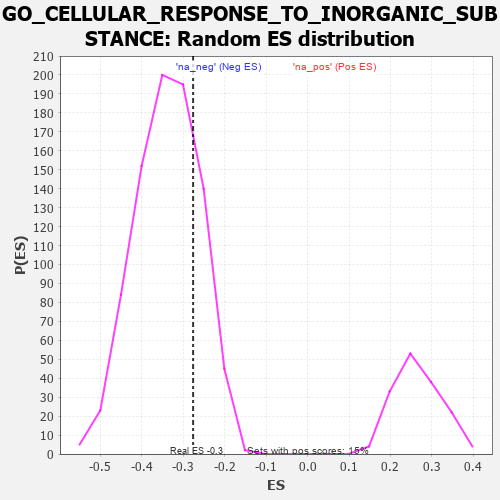

| | | Dataset | 7d |
| Phenotype | NoPhenotypeAvailable |
| Upregulated in class | na_neg |
| GeneSet | GO_CELLULAR_RESPONSE_TO_INORGANIC_SUBSTANCE |
| Enrichment Score (ES) | -0.27638027 |
| Normalized Enrichment Score (NES) | -0.817846 |
| Nominal p-value | 0.7777778 |
| FDR q-value | 0.9827972 |
| FWER p-Value | 1.0 |
Table: GSEA Results Summary
 Fig 1: Enrichment plot: GO_CELLULAR_RESPONSE_TO_INORGANIC_SUBSTANCE
Fig 1: Enrichment plot: GO_CELLULAR_RESPONSE_TO_INORGANIC_SUBSTANCE
Profile of the Running ES Score & Positions of GeneSet Members on the Rank Ordered List
| PROBE | GENE SYMBOL | GENE_TITLE | RANK IN GENE LIST | RANK METRIC SCORE | RUNNING ES | CORE ENRICHMENT | | 1 | SYT2 | | | 8 | 5.577 | 0.1651 | No |
| 2 | ADCY8 | | | 124 | 1.418 | 0.1928 | No |
| 3 | GSK3A | | | 351 | 0.745 | 0.1864 | No |
| 4 | CCNB1 | | | 581 | 0.601 | 0.1754 | No |
| 5 | BLM | | | 804 | 0.531 | 0.1632 | No |
| 6 | AKT1 | | | 1040 | 0.476 | 0.1476 | No |
| 7 | MEF2C | | | 1054 | 0.473 | 0.1601 | No |
| 8 | AIFM1 | | | 1072 | 0.469 | 0.1719 | No |
| 9 | RAD51 | | | 1090 | 0.466 | 0.1836 | No |
| 10 | BACE1 | | | 1673 | 0.360 | 0.1208 | No |
| 11 | FMR1 | | | 1816 | 0.334 | 0.1128 | No |
| 12 | GLRA2 | | | 1892 | 0.321 | 0.1129 | No |
| 13 | KCNC2 | | | 2075 | 0.295 | 0.0987 | No |
| 14 | CDK2 | | | 2226 | 0.272 | 0.0878 | No |
| 15 | CREB1 | | | 2243 | 0.269 | 0.0938 | No |
| 16 | RTF2 | | | 2615 | 0.210 | 0.0532 | No |
| 17 | DDI2 | | | 2691 | 0.200 | 0.0497 | No |
| 18 | TIGAR | | | 3091 | 0.138 | 0.0034 | No |
| 19 | SYT8 | | | 3115 | 0.135 | 0.0045 | No |
| 20 | OGG1 | | | 3135 | 0.132 | 0.0060 | No |
| 21 | MAPK3 | | | 3589 | 0.062 | -0.0493 | No |
| 22 | HSF1 | | | 3718 | 0.039 | -0.0644 | No |
| 23 | DAXX | | | 3722 | 0.038 | -0.0636 | No |
| 24 | SYT11 | | | 3732 | 0.036 | -0.0637 | No |
| 25 | GLRA1 | | | 3957 | 0.001 | -0.0919 | No |
| 26 | PARP1 | | | 4014 | -0.010 | -0.0987 | No |
| 27 | CRK | | | 4139 | -0.031 | -0.1134 | No |
| 28 | NFYA | | | 4140 | -0.031 | -0.1125 | No |
| 29 | SYT12 | | | 4172 | -0.037 | -0.1153 | No |
| 30 | SYT17 | | | 4310 | -0.061 | -0.1308 | No |
| 31 | LRRK2 | | | 4467 | -0.087 | -0.1479 | No |
| 32 | MEF2A | | | 4499 | -0.095 | -0.1490 | No |
| 33 | SYT4 | | | 4590 | -0.116 | -0.1569 | No |
| 34 | P2RX4 | | | 4813 | -0.161 | -0.1802 | No |
| 35 | ATRX | | | 4929 | -0.184 | -0.1892 | No |
| 36 | AOC1 | | | 4993 | -0.197 | -0.1913 | No |
| 37 | DDX11 | | | 5102 | -0.225 | -0.1983 | No |
| 38 | MMP9 | | | 5108 | -0.227 | -0.1921 | No |
| 39 | CPNE9 | | | 5374 | -0.289 | -0.2170 | No |
| 40 | DLG4 | | | 5388 | -0.293 | -0.2099 | No |
| 41 | FABP4 | | | 5509 | -0.322 | -0.2155 | No |
| 42 | SYT9 | | | 5992 | -0.469 | -0.2624 | Yes |
| 43 | HVCN1 | | | 6034 | -0.482 | -0.2532 | Yes |
| 44 | CALR | | | 6077 | -0.499 | -0.2437 | Yes |
| 45 | DLG2 | | | 6126 | -0.513 | -0.2345 | Yes |
| 46 | CPNE2 | | | 6417 | -0.627 | -0.2525 | Yes |
| 47 | SYT15 | | | 6472 | -0.650 | -0.2399 | Yes |
| 48 | CPNE8 | | | 6538 | -0.680 | -0.2279 | Yes |
| 49 | EGFR | | | 6708 | -0.765 | -0.2265 | Yes |
| 50 | CPNE5 | | | 7070 | -0.977 | -0.2430 | Yes |
| 51 | SYT1 | | | 7148 | -1.033 | -0.2219 | Yes |
| 52 | TSPO | | | 7194 | -1.065 | -0.1959 | Yes |
| 53 | TRPM2 | | | 7680 | -1.712 | -0.2062 | Yes |
| 54 | ANK3 | | | 7690 | -1.740 | -0.1555 | Yes |
| 55 | ADCY1 | | | 7695 | -1.752 | -0.1038 | Yes |
| 56 | PKD2 | | | 7822 | -2.167 | -0.0552 | Yes |
| 57 | TRAF2 | | | 7861 | -2.481 | 0.0139 | Yes |
Table: GSEA details [plain text format]

Fig 2: GO_CELLULAR_RESPONSE_TO_INORGANIC_SUBSTANCE: Random ES distribution
Gene set null distribution of ES for GO_CELLULAR_RESPONSE_TO_INORGANIC_SUBSTANCE